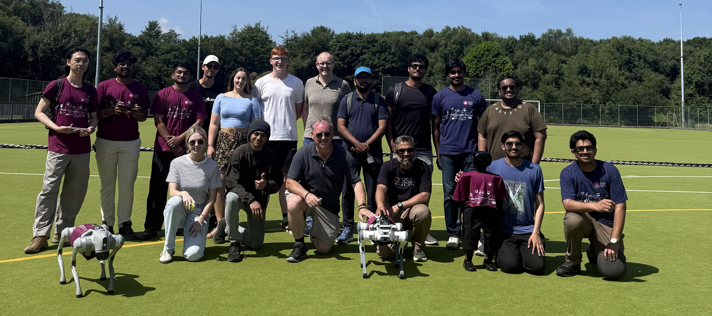
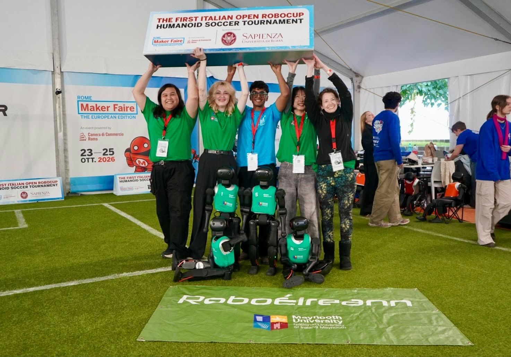
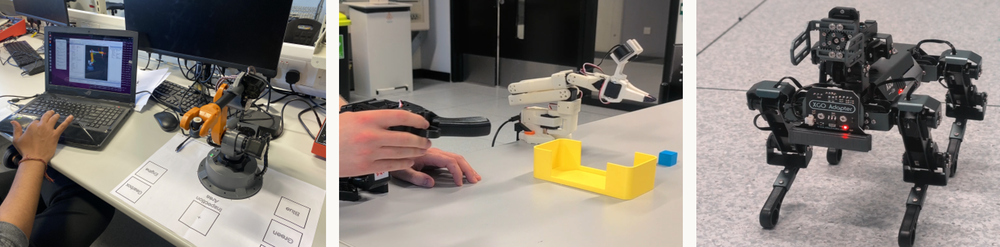
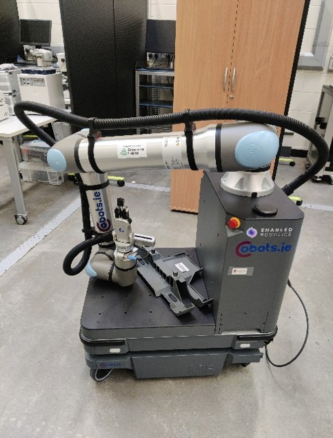
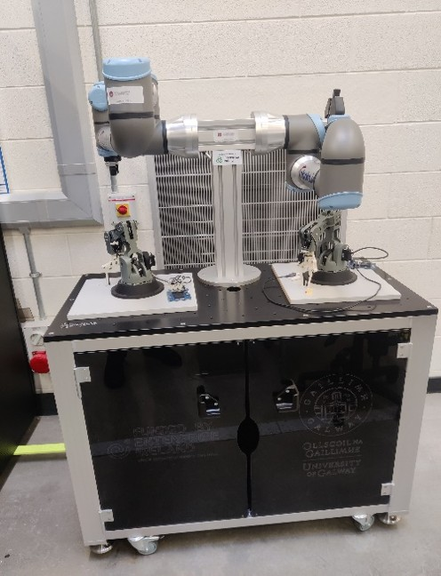
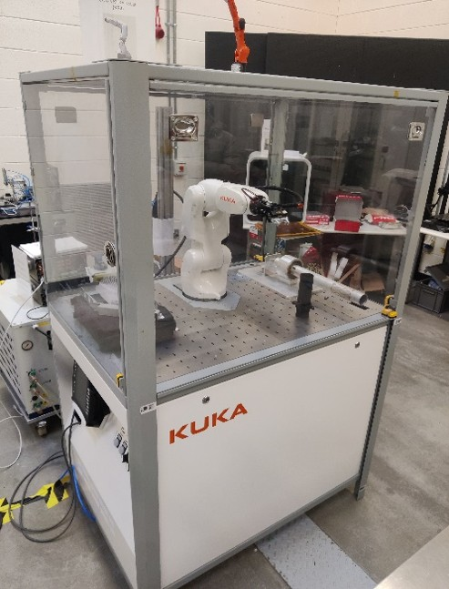

Research workshop · 2026
Embodied AI
& Robotics
Bringing intelligence into the real world.
A day of ideas, live demonstrations and new connections exploring Robotics, Automation and Modelling for Environmental and Sustainable Systems.
Ryan Institute
School of Computer Science

When
Time
09:00 – 17:00 GMT
Where
ENG-3035, Engineering Building
Ideas into impact
Where AI meets
the physical world.
Connect with others interested in Robotics, Automation and Modelling for Environmental and Sustainable Systems.
Organised by the Ryan Institute and the School of Computer Science at the University of Galway, this workshop brings together perspectives on sensing and perception, marine robotics, machine learning, sustainable manufacturing and responsible deployment.
Join us for three keynotes, research talks, a live robotics demonstration, and opportunities to explore funding and future collaborations.
The day at a glance
Workshop programme
All times GMT · Galway, Ireland
| Time | Session | Programme & speaker |
|---|---|---|
| – 09:30 | Arrival | Registration |
| – 09:45 | Opening | Welcome address and opening remarksProf. Frances Fahy Director, Ryan Institute · University of Galway |
| – 10:15 | Talk | Challenges of sensing and perception in mass-production autonomous systemsDr. Brian Deegan University of Galway |
| – 11:00 | Keynote 1 | Heterogeneous Marine Robotics: UAV, ASV and ROV SystemsDr. Gerard Dooly University of Limerick |
| – 11:30 | Break | Coffee break & poster presentation |
| – 12:15 | Keynote 2 | Leveraging Perception and Machine Learning to Facilitate Real-World Robot DeploymentDr. Philip Long Atlantic Technological University |
| – 12:45 | Talk | Autonomous material replenishment and digital twins for sustainable manufacturingPadraig Conneely University of Galway |
| – 13:30 | Live demo | Quadruple and Humanoid Robotics DemonstrationDr. Waqar Shahid Qureshi University of Galway |
| – 14:45 | Break | Lunch & poster presentation |
| – 15:30 | Keynote 3 | AI, Robotics, and Compliance: Introducing the EU AI Act and CE MarkingDr. Julio Zanon |
| – 16:30 | Talk | Research funding landscape in Ireland: opportunities for collaborationResearch Office University of Galway |
| – 17:00 | Networking | Coffee, networking and collaboration |
Organised by the Ryan Institute, and the School of Computer Science at the University of Galway.
Supported by the NUI Grant Scheme for Early Career Academics 2026.
Beyond the algorithm
Robotics at the University of Galway
Explore the technologies connecting
perception, intelligence and action.
Humanoid robots & robot dogs
Bringing people and robotic systems together on the pitch.

RoboCup & Maynooth collaboration
Collaboration with Maynooth University in humanoid robot football, pictured at the Italian Open RoboCup Humanoid Soccer Tournament.

Interaction & locomotion
Robotic manipulation and legged systems.
Perception & navigation
Watch the robotics video, or download the MP4.

Autonomous manipulation
Connecting mobility with purposeful action.

Collaborative robotics
Robotic manipulation at a University of Galway laboratory workstation.

Industrial robotics
A KUKA robotic workcell for manipulation and automation.
Connect for a sustainable future
A place to connect.
A shared sustainable future.
A place for everyone interested in Robotics, Automation and Modelling for Environmental and Sustainable Systems to connect, share ideas and explore future collaborations.
Workshop venue
Engineering Building
Room ENG-3035
University of GalwayGalway, Ireland
09:00 – 17:00 GMT
Be part of the conversation
Registration
Register for Embodied AI & Robotics.
Connect with others interested in robotics, embodied AI, environmental systems and sustainability. Complete the form here, open it directly, or scan the QR code.
Friday, 4 December 2026 · Engineering Building, ENG-3035 · University of Galway
 (opens in a new tab)
(opens in a new tab)
Form not loading? Open registration in a new tab.
Bringing us together